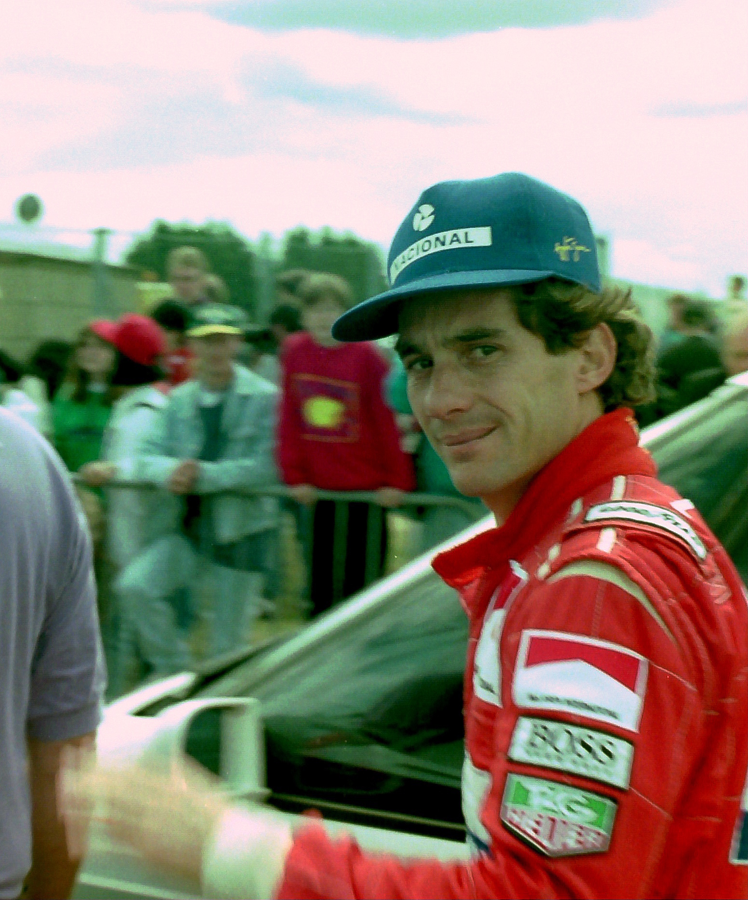
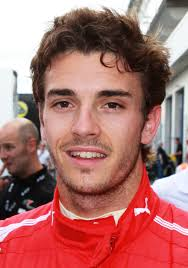
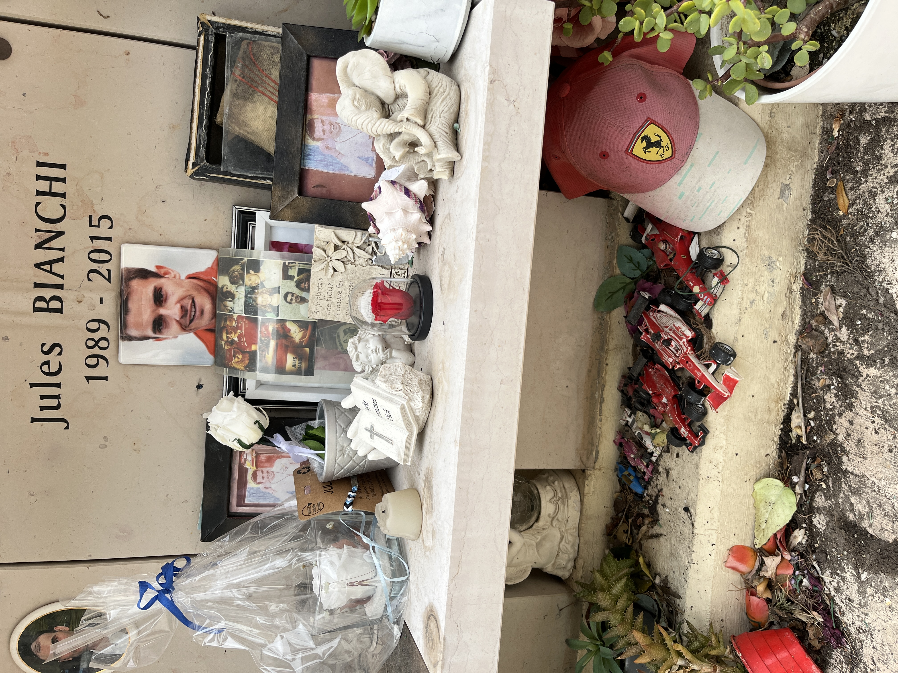

Ayrton Senna da Silva
March 21, 1960 - May 1, 1994
A three-time Formula 1 champion, Ayrton Senna da Silva was born on March 21, 1960, in the city of São Paulo. He was the son of a motor trader and the uncle of ex-Formula 1 driver Bruno Senna.


Jules Lucien Andre Bianchi
August 3, 1989 - July 17, 2015
Jules Lucien André Bianchi was a French motor racing driver who drove for the Marussia F1 Team in Formula One. Bianchi had previously raced in Formula Renault 3.5, GP2 and Formula Three and was a Ferrari Driver Academy member.